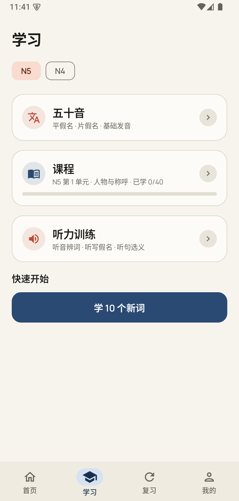
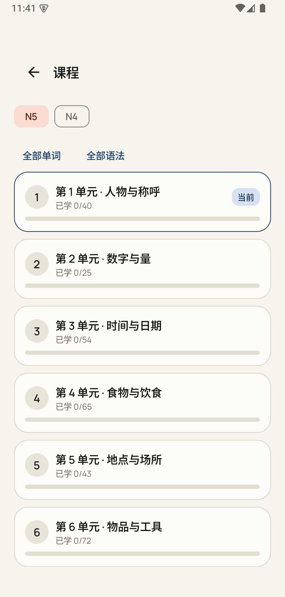
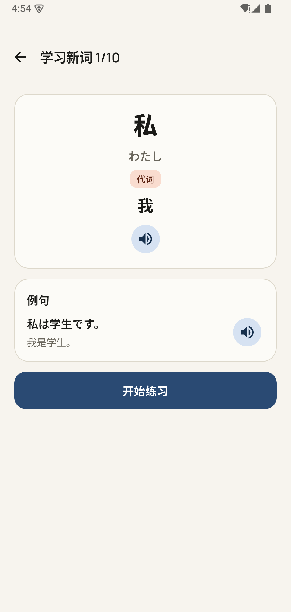
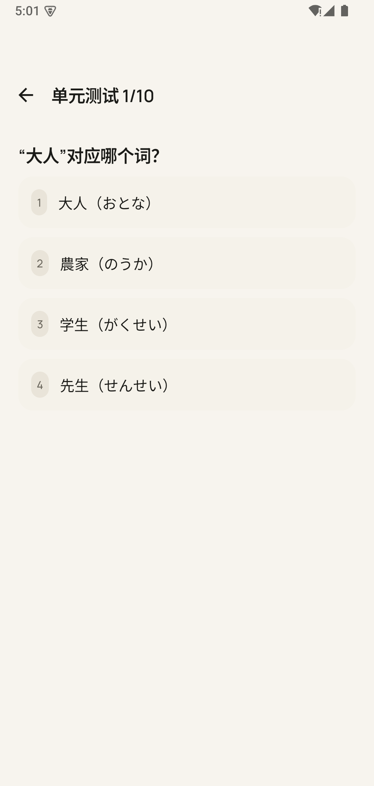
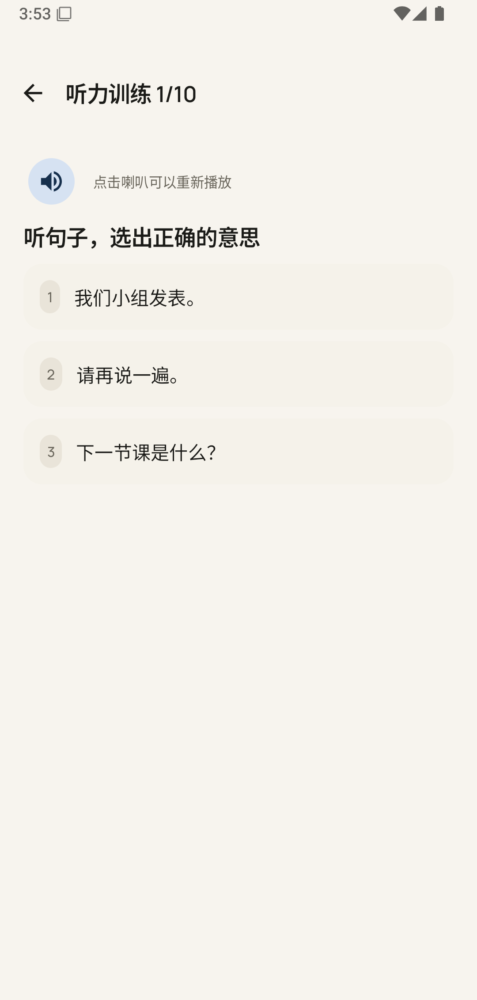
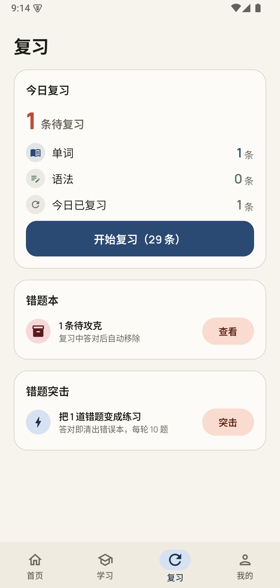
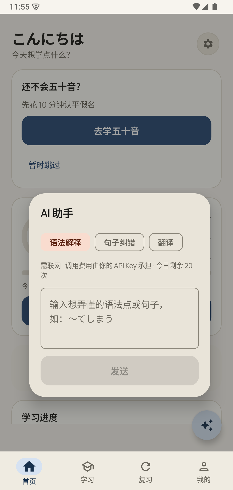

完全离线
五十音、课程、句子随安装包落地。无网络、无登录墙，飞行模式可完整使用。
核心功能
每一项功能都服务于同一条路径：打开 → 学一点 → 练一点 → 记住掌握度 → 明天继续。
五十音、课程、句子随安装包落地。无网络、无登录墙，飞行模式可完整使用。
22 个课程单元顺序学词 + 配套语法，当前单元自动推进，10 题单元测试做检查点。
移植开源 ts-fsrs：四档自评映射 Again/Hard/Good/Easy，间隔按记忆稳定性逐题计算。
听音辨词 / 听写假名 / 听句选义三题型混合，答错自动进错题本；场景句库 300 条。
N5 核心 397 字：音读/训读分列 + 词例；卡片学 → 五种选择题（含听音选字）→ 自评进 FSRS，配额按目标档位折算。
设 N5/N4 目标与达成日期，App 倒推每日新词档位并每周自动校准，赶不上就如实提醒。
答错自动收录；错题变练习，答对即清出，每轮 10 题；复习队列中错题优先出队。
自备 API Key 直连大模型：语法解释 / 句子纠错 / 翻译，流式打字机输出；不配置则完全隐藏。
连击、累计时长、近 7 日柱状图、掌握度分档与错题画像；成果页汇总掌握词/汉字、最长连击与 22 单元进度。
101 组假名分组测验；1104 词 / 148 语法全库检索，假名、词性、例句与掌握度色点。
使用场景 / 工作流
通勤前、午休、睡前——任选 5–15 分钟，走完一轮就可以关掉 App。
按你的目标与当前课程单元取出今日新词、语法、汉字与待复习项，进度条实时更新。
学完立刻选择 / 听音 / 打假名。错了自动进错题本，学了就能用。
四档：不认识 / 模糊 / 熟悉 / 熟练。你告诉 App，它决定下次何时出现。
FSRS 按记忆稳定性排期；默认最多 30 条，超出顺延，不会一天被压垮。
产品界面
界面与官网同一套和色语言：清晰层级、固定头部、独立滚动，少干扰、多完成。







可选增强
不建后端、不加账号。AI 是唯一可选的在线能力——不配置就完全不存在，学习数据仍然只存本机。
语法解释 / 句子纠错 / 翻译。语法详情页与错题本可一键带入教材上下文。
回答逐字打字机呈现，首字更快；中断保留已收到的部分，离开页面即取消。
填 Base URL / Key / 模型名三字段即可，预设 DeepSeek / GLM / OpenAI；费用由你的 Key 承担。
Key 仅存本机、不进备份、不打日志；每日限额 10/20/50/不限可调，首次调用才计数。
可验证的产品事实
这里不放虚构用户评价，只列可核对的能力与公开规则。
| 常见做法 | JapanLearn |
|---|---|
| 强制注册登录 | 打开即用，数据存本机，不留个人信息 |
| 需要联网加载课程 | 内容版本化打包，飞行模式可完整使用 |
| 复习量无节制堆积 | 默认每日上限 30 条，超出自动顺延 |
| 间隔算法黑箱 | FSRS 开源算法，调度器纯函数 + 275 项单元测试 |
| 只有刷选择题 | 听音选词、听写假名、看中文打假名等产出型练习 |
| AI 功能默认上传数据 | AI 助手完全可选：不配 Key 则不存在，学习数据永不出设备 |
FAQ
不需要。JapanLearn 无账号体系，学习内容与进度都在本机。联网不是使用前提；仅当你主动从浏览器下载更新、访问 GitHub 或使用可选的 AI 助手时才需要网络。
使用系统日语 TTS，不引入付费语音服务。部分国产 ROM 的默认引擎可能无法正确朗读日语，App 会引导安装/切换 Google TTS，并可在「我的 → 发音」里选择已下载的日语音色。
面向零基础到 N5/N4 的入门与巩固：22 个课程单元按主题推进，配目标倒推的每日计划，强调短时高频闭环，不是完整应试课程。N3 及以上、口语精练、听力长文等不在当前范围。
不会主动上传。AI 助手完全可选：不配置 API Key 时所有入口都不出现。配置后走你自己填写的 OpenAI 兼容端点（预设 DeepSeek / GLM / OpenAI），只有你主动发送的内容会发往该端点，费用由你的 Key 承担。Key 仅存本机、不进备份、不打日志，学习进度永远只存本机。
学习进度存在本机数据库。请在「我的」中使用备份导出，在新设备导入。未备份时卸载会丢失记录——请先导出再卸载。
免费且开源（MIT），无内购、无广告、无订阅。下载与使用都不需要付费；AI 助手如使用付费大模型服务，费用由你自己的 API Key 承担，与 App 无关。
到 GitHub 仓库 提 Issue 或 PR。内容以带版本号的 JSON 维护，合并前会跑校验脚本与单元测试。